占事：丑月大盘
时间: 2017-01-05 13时42分
干支: 丙申年辛丑月壬辰日 (旬空: 午未 )
火山旅 天山遁
六神 伏神 本 卦 变 卦
白虎 ▅▅▅▅▅ 兄弟巳火 ▅▅▅▅▅ 子孙戌土
腾蛇 ▅▅ ▅▅ 子孙未土 Ｘ→ ▅▅▅▅▅ 妻财申金 应
勾陈 ▅▅▅▅▅ 妻财酉金 应 ▅▅▅▅▅ 兄弟午火
朱雀 官鬼亥水▅▅▅▅▅ 妻财申金 ▅▅▅▅▅ 妻财申金
青龙 ▅▅ ▅▅ 兄弟午火 ▅▅ ▅▅ 兄弟午火 世
玄武 父母卯木▅▅ ▅▅ 子孙辰土 世 ▅▅ ▅▅ 子孙辰土
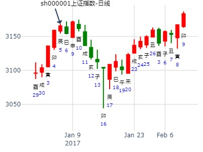
主帖标题: 亚振家居 603389本周涨跌
手摇卦
公历时间：2020年1月6日21时24分
干 支：己亥年 丁丑月 戊申日 癸亥时
旬 空：辰巳 申酉 寅卯 子丑
神 煞：驿马─寅 桃花─酉 日禄─巳 贵人─丑，未
离宫：火山旅 乾宫：天山遁
六神 伏 神 【本 卦】 【变 卦】
朱雀 ▄▄▄▄▄ 兄弟己巳火 ▄▄▄▄▄ 子孙壬戌土
青龙 ▄▄ ▄▄ 子孙己未土 × ▄▄▄▄▄ 妻财壬申金 应
玄武 ▄▄▄▄▄ 妻财己酉金 应 ▄▄▄▄▄ 兄弟壬午火
白虎 官鬼己亥水 ▄▄▄▄▄ 妻财丙申金 ▄▄▄▄▄ 妻财丙申金
螣蛇 ▄▄ ▄▄ 兄弟丙午火 ▄▄ ▄▄ 兄弟丙午火 世
勾陈 父母己卯木 ▄▄ ▄▄ 子孙丙辰土 世 ▄▄ ▄▄ 子孙丙辰土
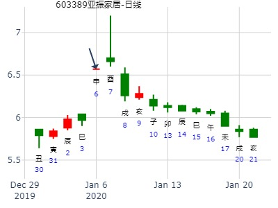
主帖标题: 2011年1月10--14日上证大盘走势（铜钱）
公历时间：2011年1月9日9时10分 星期日
农历时间：庚寅年十二月初六巳时
干支：庚寅年 己丑月 甲子日 己巳时 (旬空：戌亥)
神煞：驿马—寅 桃花—酉 日禄—寅 贵人—丑，未
离宫：火山旅 乾宫：天山遁
六神 伏 神 【本 卦】 【变 卦】
玄武 ▅▅▅▅▅ 兄弟己巳火 ▅▅▅▅▅ 子孙壬戌土
白虎 ▅▅ ▅▅ 子孙己未土 ×→ ▅▅▅▅▅ 妻财壬申金 应
螣蛇 ▅▅▅▅▅ 妻财己酉金 应 ▅▅▅▅▅ 兄弟壬午火
勾陈 官鬼己亥水 ▅▅▅▅▅ 妻财丙申金 ▅▅▅▅▅ 妻财丙申金
朱雀 ▅▅ ▅▅ 兄弟丙午火 ▅▅ ▅▅ 兄弟丙午火 世
青龙 父母己卯木 ▅▅ ▅▅ 子孙丙辰土 世 ▅▅ ▅▅ 子孙丙辰土
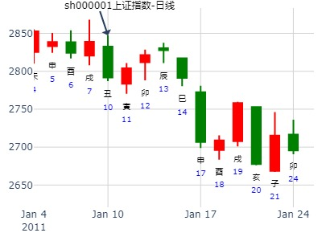
占事: 金种子酒在2020年走势如何（无股）暴涨
时间: 2020-01-10 18时51分 金玉堂出品
干支: 己亥年丁丑月壬子日己酉时 (旬空: 寅卯 )
火山旅 天山遁
六神 伏神 本 卦 变 卦
白虎 ▅▅▅▅▅ 兄弟巳火 ▅▅▅▅▅ 子孙戌土
腾蛇 ▅▅ ▅▅ 子孙未土 Ｘ→ ▅▅▅▅▅ 妻财申金 应
勾陈 ▅▅▅▅▅ 妻财酉金 应 ▅▅▅▅▅ 兄弟午火
朱雀 官鬼亥水▅▅▅▅▅ 妻财申金 ▅▅▅▅▅ 妻财申金
青龙 ▅▅ ▅▅ 兄弟午火 ▅▅ ▅▅ 兄弟午火 世
玄武 父母卯木▅▅ ▅▅ 子孙辰土 世 ▅▅ ▅▅ 子孙辰土
子化财，反而值子和财时见顶与调整。子化财经典
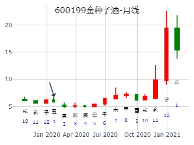
2024年1月16日 9:00
占问：512880证券etf2024年卦，旅之遁，by风生水起
癸卯年 乙丑月 己卯日 己巳时 (旬空：申酉)
时间: 2024-01-16
干支: 癸卯年乙丑月己卯日 (旬空: 申酉 )
火山旅 天山遁
六神 伏神 本 卦 变 卦
勾陈 ▅▅▅▅▅ 兄弟巳火 ▅▅▅▅▅ 子孙戌土
朱雀 ▅▅ ▅▅ 子孙未土 Ｘ→ ▅▅▅▅▅ 妻财申金 应
青龙 ▅▅▅▅▅ 妻财酉金 应 ▅▅▅▅▅ 兄弟午火
玄武 官鬼亥水▅▅▅▅▅ 妻财申金 ▅▅▅▅▅ 妻财申金
白虎 ▅▅ ▅▅ 兄弟午火 ▅▅ ▅▅ 兄弟午火 世
腾蛇 父母卯木▅▅ ▅▅ 子孙辰土 世 ▅▅ ▅▅ 子孙辰土
寅月冲实，还长1个月。卯月就不算。
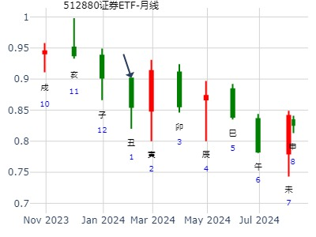
主帖标题: [ 大盘指数 ] 4月股票市场走势涨？跌？
起卦方式：手动摇卦
公历时间：2008年3月28日12时7分
干支：戊子年 乙卯月 丁卯日 丙午时
旬空：午未 子丑 戌亥 寅卯
神煞：驿马─巳 桃花─子 日禄─午 贵人─酉，亥
离宫：火山旅 乾宫：天山遁
六神 伏 神 【本 卦】 【变 卦】
青龙 ▄▄▄▄▄ 兄弟己巳火 ▄▄▄▄▄ 子孙壬戌土
玄武 ▄▄ ▄▄ 子孙己未土 X-> ▄▄▄▄▄ 妻财壬申金 应
白虎 ▄▄▄▄▄ 妻财己酉金 应 ▄▄▄▄▄ 兄弟壬午火
螣蛇 官鬼己亥水 ▄▄▄▄▄ 妻财丙申金 ▄▄▄▄▄ 妻财丙申金
勾陈 ▄▄ ▄▄ 兄弟丙午火 ▄▄ ▄▄ 兄弟丙午火 世
朱雀 父母己卯木 ▄▄ ▄▄ 子孙丙辰土 世 ▄▄ ▄▄ 子孙丙辰土
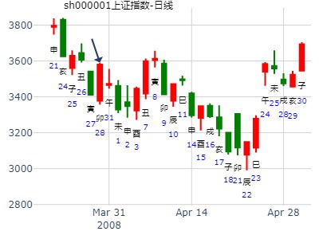
青海华鼎到8月。旅之遁。
时间: 2022-05-04
干支: 壬寅年甲辰月丁巳日 (旬空: 子丑 )
火山旅 天山遁
六神 伏神 本 卦 变 卦
青龙 ▅▅▅▅▅ 兄弟巳火 ▅▅▅▅▅ 子孙戌土
玄武 ▅▅ ▅▅ 子孙未土 Ｘ→ ▅▅▅▅▅ 妻财申金 应
白虎 ▅▅▅▅▅ 妻财酉金 应 ▅▅▅▅▅ 兄弟午火
腾蛇 官鬼亥水▅▅▅▅▅ 妻财申金 ▅▅▅▅▅ 妻财申金
勾陈 ▅▅ ▅▅ 兄弟午火 ▅▅ ▅▅ 兄弟午火 世
朱雀 父母卯木▅▅ ▅▅ 子孙辰土 世 ▅▅ ▅▅ 子孙辰土
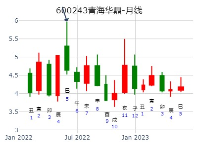
主帖标题: 短线股票~即将拉升（各位童鞋可以关注）
乙版你的伊顿电子最近走势强劲
公历时间：2015年5月18日20时23分
干 支：乙未年 辛巳月 甲午日 甲戌时
旬 空：辰巳 申酉 (辰巳) 申酉
神 煞：驿马─申 桃花─卯 日禄─寅 贵人─丑，未
离宫：火山旅 乾宫：天山遁
六神 伏 神 【本 卦】 【变 卦】
玄武 ▄▄▄▄▄ 兄弟己巳火 ▄▄▄▄▄ 子孙壬戌土
白虎 ▄▄ ▄▄ 子孙己未土 X-> ▄▄▄▄▄ 妻财壬申金 应
螣蛇 ▄▄▄▄▄ 妻财己酉金 应 ▄▄▄▄▄ 兄弟壬午火
勾陈 官鬼己亥水 ▄▄▄▄▄ 妻财丙申金 ▄▄▄▄▄ 妻财丙申金
朱雀 ▄▄ ▄▄ 兄弟丙午火 ▄▄ ▄▄ 兄弟丙午火 世
青龙 父母己卯木 ▄▄ ▄▄ 子孙丙辰土 世 ▄▄ ▄▄ 子孙丙辰土
这是我预测后几天的走势 [s:53]
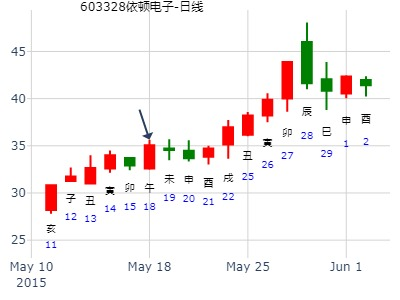
2020.05.28日上证指数擂台赛第十九场第4局 Z方（日测
数理卦
公历起卦时间：2020年5月28日4时24分 (手工指定)
干支：庚子年 辛巳月 辛未日 庚寅时 （日空：戌亥）
神煞：驿马－巳 桃花－子 日禄－酉 贵人－寅，午
离宫：火山旅 乾宫：天山遁
六神 伏神 本 卦 变 卦
螣蛇 兄弟己巳火 ▅▅▅▅▅ 子孙壬戌土 ▅▅▅▅▅
勾陈 子孙己未土 ▅▅ ▅▅ ╳→ 妻财壬申金 ▅▅▅▅▅ 应
朱雀 妻财己酉金 ▅▅▅▅▅ 应 兄弟壬午火 ▅▅▅▅▅
青龙 官鬼己亥水 妻财丙申金 ▅▅▅▅▅ 妻财丙申金 ▅▅▅▅▅
玄武 兄弟丙午火 ▅▅ ▅▅ 兄弟丙午火 ▅▅ ▅▅ 世
白虎 父母己卯木 子孙丙辰土 ▅▅ ▅▅ 世 子孙丙辰土 ▅▅ ▅▅

学术问题[3]：年旬空、月旬空、时旬空在六爻预测中怎么应用?
举一个测例：天翔环境300362
公历起卦时间：2019年6月20日22时6分
干支：己亥年 庚午月 戊子日 癸亥时 （日空：午未）
神煞：驿马－寅 桃花－酉 日禄－巳 贵人－丑，未
离宫：火山旅 乾宫：天山遁
六神 伏神 本 卦 变 卦
朱雀 兄弟己巳火 ▅▅▅▅▅ 子孙壬戌土 ▅▅▅▅▅
青龙 子孙己未土 ▅▅ ▅▅ ╳→ 妻财壬申金 ▅▅▅▅▅ 应
玄武 妻财己酉金 ▅▅▅▅▅ 应 兄弟壬午火 ▅▅▅▅▅
白虎 官鬼己亥水 妻财丙申金 ▅▅▅▅▅ 妻财丙申金 ▅▅▅▅▅
腾蛇 兄弟丙午火 ▅▅ ▅▅ 兄弟丙午火 ▅▅ ▅▅ 世
勾陈 父母己卯木 子孙丙辰土 ▅▅ ▅▅ 世 子孙丙辰土 ▅▅ ▅▅
午未空亡，五爻未土空亡如个大洞口在动，从里面或说是从另一个世界通过这个大通道推来如此大量的资金（化财）进入卦中（也就是进入此股）中，资金入场，迫使股价飞涨，不是空亡的力量，怎会有如此连续一字涨停？子动空亡，成交量稀少，跟风盘难买到股票，其象读之则谓“无量涨停走势”。
麦华盛 发表于 2019-1129 18:27
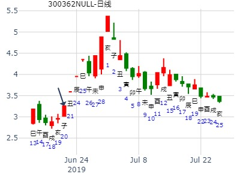
北京市房价2012-2023年何年最低？ 起卦方式：手动摇卦
公历时间：2012年6月22日9时46分
干 支：壬辰年 丙午月 甲寅日 己巳时
旬 空：午未 寅卯 (子丑) 戌亥
离宫：火山旅 乾宫：天山遁
六神 伏 神 【本 卦】 【变 卦】
玄武 ▄▄▄▄▄ 兄弟己巳火 ▄▄▄▄▄ 子孙壬戌土
白虎 ▄▄ ▄▄ 子孙己未土 X-> ▄▄▄▄▄ 妻财壬申金 应
螣蛇 ▄▄▄▄▄ 妻财己酉金 应 ▄▄▄▄▄ 兄弟壬午火
勾陈 官鬼己亥水 ▄▄▄▄▄ 妻财丙申金 ▄▄▄▄▄ 妻财丙申金
朱雀 ▄▄ ▄▄ 兄弟丙午火 ▄▄ ▄▄ 兄弟丙午火 世
青龙 父母己卯木 ▄▄ ▄▄ 子孙丙辰土 世 ▄▄ ▄▄ 子孙丙辰土
六五：射雉一矢亡，终以誉命。
象曰：终以誉命，上逮也。
大涨卦，用金钟子酒代替
占事: 2测同仁堂今天收盘高于33.20？6.23
起卦方式：手动摇卦 周易天地www.64gua.com六爻线上排盘系统
公历时间：2011年6月23日7时24分
干支：辛卯年 甲午月 己酉日 戊辰时
旬空：午未 辰巳 寅卯 戌亥
神煞：驿马─亥 桃花─午 日禄─午 贵人─子，申
离宫：火山旅 乾宫：天山遁
六神 伏 神 【本 卦】 【变 卦】
勾陈 ▄▄▄▄▄ 兄弟己巳火 ▄▄▄▄▄ 子孙壬戌土
朱雀 ▄▄ ▄▄ 子孙己未土 X-> ▄▄▄▄▄ 妻财壬申金 应
青龙 ▄▄▄▄▄ 妻财己酉金 应 ▄▄▄▄▄ 兄弟壬午火
玄武 官鬼己亥水 ▄▄▄▄▄ 妻财丙申金 ▄▄▄▄▄ 妻财丙申金
白虎 ▄▄ ▄▄ 兄弟丙午火 ▄▄ ▄▄ 兄弟丙午火 世
螣蛇 父母己卯木 ▄▄ ▄▄ 子孙丙辰土 世 ▄▄ ▄▄ 子孙丙辰土
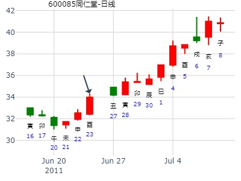
请高手看看，未买此股??思无
占事：常山药业下周走势
起卦方式：手动摇卦
公历时间：2015年8月30日13时5分
干 支：乙未年 甲申月 戊寅日?己未时
旬 空：辰巳 午未 (申酉) 子丑
离宫：火山旅 乾宫：天山遁?
六神? 伏 神?【本 卦】 【变 卦】
朱雀 ▄▄▄▄▄ 兄弟己巳火 ▄▄▄▄▄ 子孙壬戌土
青龙 ▄▄ ▄▄ 子孙己未土 X-> ▄▄▄▄▄ 妻财壬申金 应
玄武 ▄▄▄▄▄ 妻财己酉金 应 ▄▄▄▄▄ 兄弟壬午火
白虎 官鬼己亥水 ▄▄▄▄▄ 妻财丙申金 ▄▄▄▄▄ 妻财丙申金
螣蛇 ▄▄ ▄▄ 兄弟丙午火 ▄▄ ▄▄ 兄弟丙午火 世
勾陈 父母己卯木 ▄▄ ▄▄ 子孙丙辰土 世 ▄▄ ▄▄ 子孙丙辰土
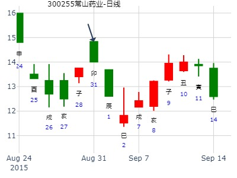
主题：9月3日黄金的走势 1265
2014-09-03
甲午 壬申 丁丑 甲辰 (申酉空)
甲午年八月初十(2014/09/03 08:43:51)
火山旅 天山遁
青龙 兄弟乙巳 ／ 子孙庚戌 ／
玄武 子孙丁未 × 妻财戊申 ／ 应
白虎 妻财己酉 ／ 应 兄弟丙午 ／
官鬼辛亥：腾蛇 妻财戊申 ／ 妻财戊申 ／
勾陈 兄弟丙午 ∥ 兄弟丙午 ∥ 乾
父母癸卯：朱雀 子孙甲辰 ∥ 离 子孙甲辰 ∥
用黄金ETF仅供参考。黄金现货无数据
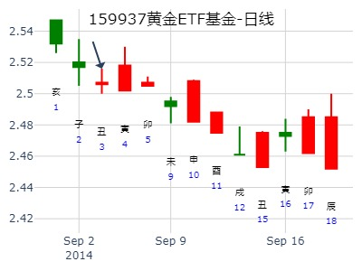
易经预测上证走势看盘交流（2014年9月5日) 乐易
起卦方式：手工指定
公历时间：2014年9月4日15时56分
干 支：甲午年 壬申月 戊寅日 庚申时
旬 空：辰巳 戌亥 (申酉) 子丑
离宫：火山旅 乾宫：天山遁
六神 伏 神 【本 卦】 【变 卦】
朱雀 ▄▄▄▄▄ 兄弟己巳火 ▄▄▄▄▄ 子孙壬戌土
青龙 ▄▄ ▄▄ 子孙己未土 X-> ▄▄▄▄▄ 妻财壬申金 应
玄武 ▄▄▄▄▄ 妻财己酉金 应 ▄▄▄▄▄ 兄弟壬午火
白虎 官鬼己亥水 ▄▄▄▄▄ 妻财丙申金 ▄▄▄▄▄ 妻财丙申金
螣蛇 ▄▄ ▄▄ 兄弟丙午火 ▄▄ ▄▄ 兄弟丙午火 世
勾陈 父母己卯木 ▄▄ ▄▄ 子孙丙辰土 世 ▄▄ ▄▄ 子孙丙辰土
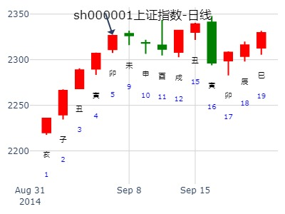